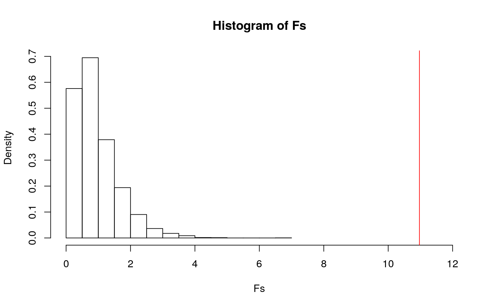
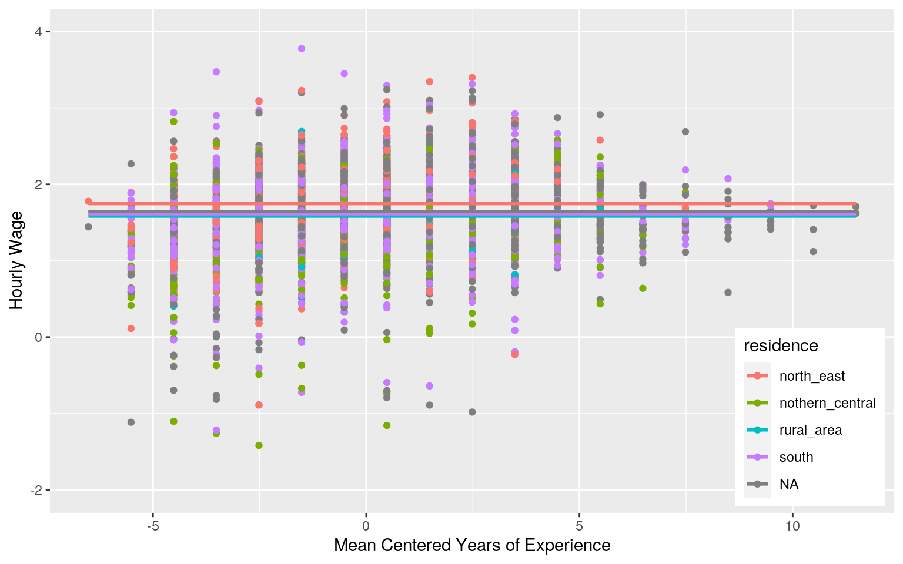
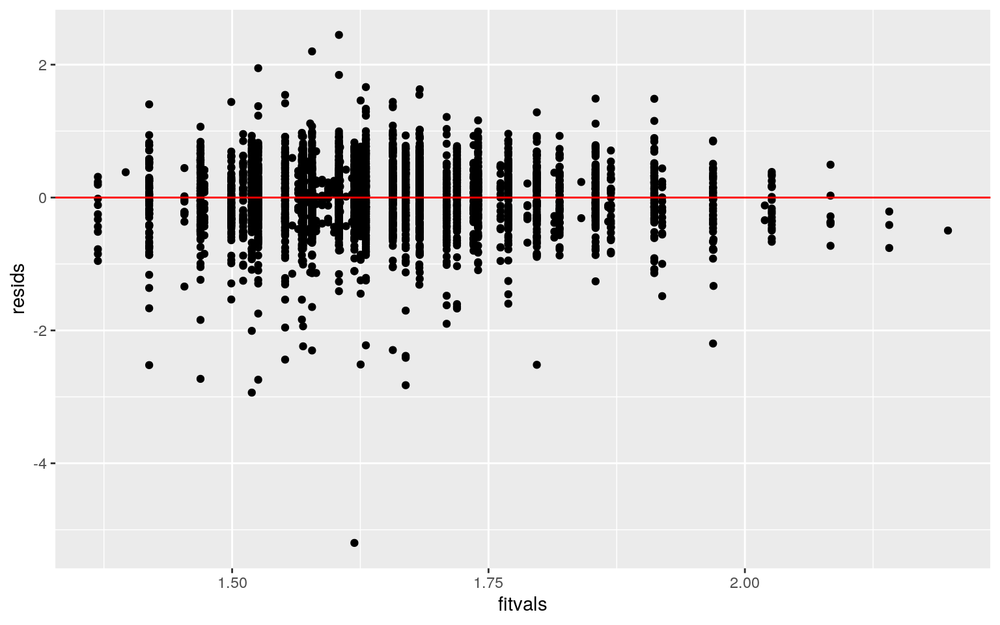
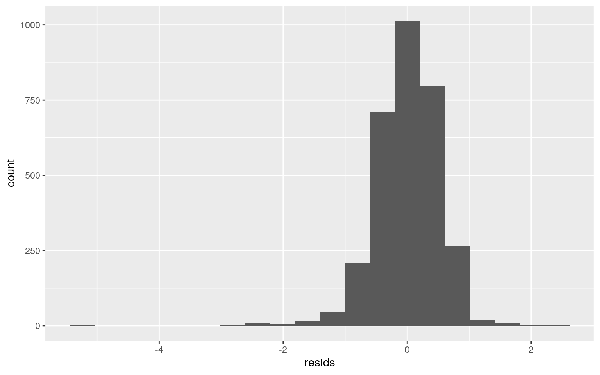
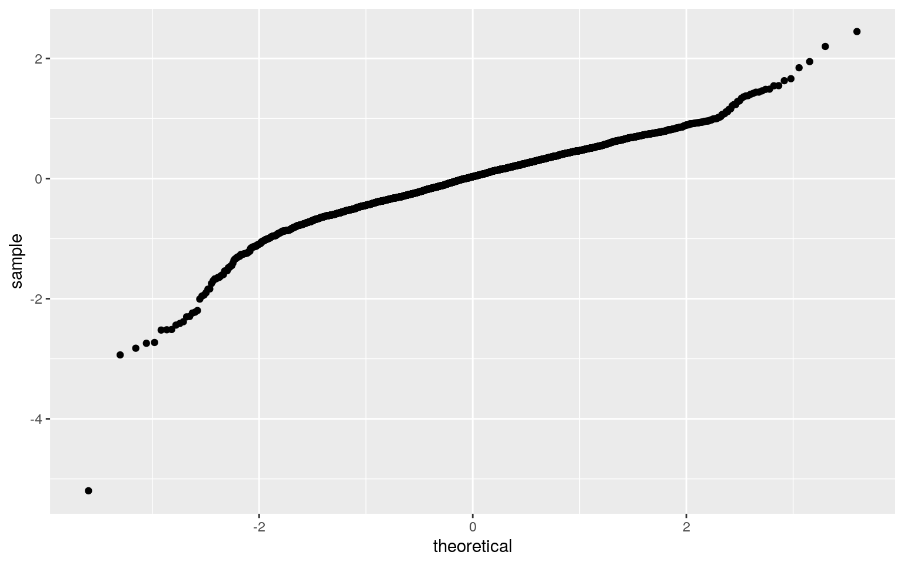
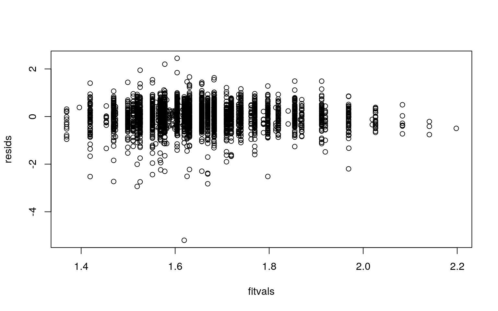
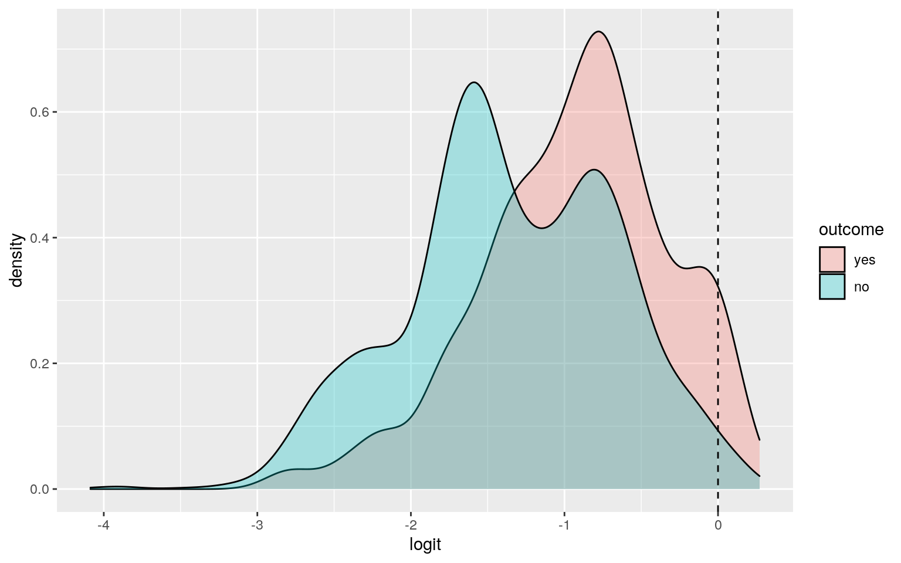
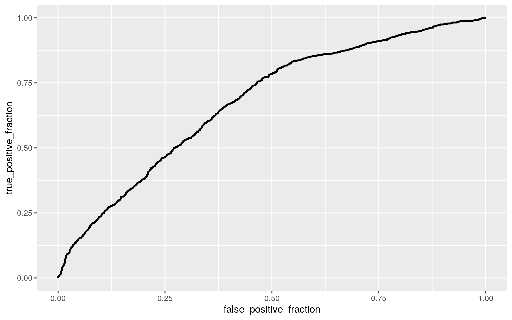

#Dataset import
Males <- read.csv("Males.csv")
Data <- Males %>% select(-1)
Data <- Data %>% filter(!is.na(school))
Data <- Data %>% filter(!is.na(exper))
Data <- Data %>% filter(!is.na(union))
Data <- Data %>% filter(!is.na(ethn))
Data <- Data %>% filter(!is.na(maried))
Data <- Data %>% filter(!is.na(health))
Data <- Data %>% filter(!is.na(wage))
Data <- Data %>% filter(!is.na(school))
Data <- Data %>% filter(!is.na(industry))
Data <- Data %>% filter(!is.na(occupation))
head(Data)## nr year school exper union ethn maried health wage
industry
## 1 13 1980 14 1 no other no no 1.197540
Business_and_Repair_Service
## 2 13 1981 14 2 yes other no no 1.853060 Personal_Service
## 3 13 1982 14 3 no other no no 1.344462
Business_and_Repair_Service
## 4 13 1983 14 4 no other no no 1.433213
Business_and_Repair_Service
## 5 13 1984 14 5 no other no no 1.568125 Personal_Service
## 6 13 1985 14 6 no other no no 1.699891
Business_and_Repair_Service
## occupation residence
## 1 Service_Workers north_east
## 2 Service_Workers north_east
## 3 Service_Workers north_east
## 4 Service_Workers north_east
## 5 Craftsmen, Foremen_and_kindred north_east
## 6 Managers, Officials_and_Proprietors north_eastThe "Males" dataset is a dataset from the National Longitudinal Survey (NLS Youth Sample). It describes the wages and education of 545 young men in the US from 1980 to 1987, for a total of 4360 observations. It breaks down across several factors including marriage status, region, health problems, and labor union participation. The column headers are; nr = identifier year = year school = years of schooling exper = years of experience (=age-6-school) union = Are they in a labor union ethn = a factor with levels (black,hisp,other), married= mariage status, health = health problem ?, wage = log of hourly wage, industry = a factor with 12 levels, occupation = a factor with 9 levels residence = a factor with levels (rural area, north east, nothern central, south)
#MANOVA
library(rstatix)
group <- Data$residence
DVs <- Data %>% select(wage,exper,school)
#Test multivariate normality for each group (null: assumption met)
sapply(split(DVs,group), mshapiro_test)## north_east nothern_central rural_area south
## statistic 0.9557471 0.8647835 0.9782454 0.9729738
## p.value 4.768229e-14 5.110465e-28 0.1608119 4.243313e-15#If any p<.05, stop (assumption violated). If not, test homogeneity of covariance matrices
#Box's M test (null: homogeneity of vcov mats assumption met)
box_m(DVs, group)## # A tibble: 1 x 4
## statistic p.value parameter method
## <dbl> <dbl> <dbl> <chr>
## 1 NA NA 18 Box's M-test for Homogeneity of Covariance
Matrices#Optionally View covariance matrices for each group
lapply(split(DVs,group), cov)## $north_east
## wage exper school
## wage 0.2554464 0.3911839 0.2973730
## exper 0.3911839 6.8300942 -0.9630085
## school 0.2973730 -0.9630085 2.8582478
##
## $nothern_central
## wage exper school
## wage 0.3237916 0.3554270 0.1803116
## exper 0.3554270 7.1050529 -0.7126071
## school 0.1803116 -0.7126071 1.7746614
##
## $rural_area
## wage exper school
## wage 0.17139967 0.04061793 0.1256380
## exper 0.04061793 6.96918768 -0.3277311
## school 0.12563802 -0.32773109 1.8907563
##
## $south
## wage exper school
## wage 0.2704535 0.1938236 0.203256
## exper 0.1938236 7.3836139 -1.306659
## school 0.2032560 -1.3066594 2.714459#Manova test
man1<-manova(cbind(wage,exper,school)~residence, data=Data)
summary(man1)## Df Pillai approx F num Df den Df Pr(>F)
## residence 3 0.018468 6.4234 9 9333 3.787e-09 ***
## Residuals 3111
## ---
## Signif. codes: 0 '***' 0.001 '**' 0.01 '*' 0.05 '.' 0.1
' ' 1summary.aov(man1)## Response wage :
## Df Sum Sq Mean Sq F value Pr(>F)
## residence 3 9.24 3.08138 10.975 3.623e-07 ***
## Residuals 3111 873.44 0.28076
## ---
## Signif. codes: 0 '***' 0.001 '**' 0.01 '*' 0.05 '.' 0.1
' ' 1
##
## Response exper :
## Df Sum Sq Mean Sq F value Pr(>F)
## residence 3 50.9 16.957 2.3696 0.06872 .
## Residuals 3111 22262.2 7.156
## ---
## Signif. codes: 0 '***' 0.001 '**' 0.01 '*' 0.05 '.' 0.1
' ' 1
##
## Response school :
## Df Sum Sq Mean Sq F value Pr(>F)
## residence 3 21.1 7.0252 2.8849 0.03442 *
## Residuals 3111 7575.7 2.4351
## ---
## Signif. codes: 0 '***' 0.001 '**' 0.01 '*' 0.05 '.' 0.1
' ' 1
##
## 1245 observations deleted due to missingnesspairwise.t.test(Data$wage,
Data$residence, p.adj="none")##
## Pairwise comparisons using t tests with pooled SD
##
## data: Data$wage and Data$residence
##
## north_east nothern_central rural_area
## nothern_central 7.7e-06 - -
## rural_area 0.0071 0.4306 -
## south 6.9e-08 0.4908 0.5914
##
## P value adjustment method: nonepairwise.t.test(Data$school,
Data$residence, p.adj="none")##
## Pairwise comparisons using t tests with pooled SD
##
## data: Data$school and Data$residence
##
## north_east nothern_central rural_area
## nothern_central 0.4144 - -
## rural_area 0.3168 0.5090 -
## south 0.1240 0.0088 0.0974
##
## P value adjustment method: nonePerformed MANOVA test using numeric variables of wage, years of schooling, and years of experience against place of residence. Tests of MANOVA assumptions were performed to assess multivariate normality, and homogenity of covariance matrices. However the test results were uncertain as much of the test output resulted in NA's, but the test was performed nonetheless. Performed univariate ANOVAs finding signifcant effects for wage and years of schooling so performed t-tests for those. 9 tests performed in total (1 MANOVA, 2 ANOVAs, and 6 t tests), corrected alpha = .05/9 = .0056, without correction there's a 0.37 chance of at least 1 type 1 error. After correction is accounted for, wage is the only variable that varies significntly across residence groups.
#randomization test; ANOVA
summary(aov(wage~residence,data=Data))## Df Sum Sq Mean Sq F value Pr(>F)
## residence 3 9.2 3.0814 10.97 3.62e-07 ***
## Residuals 3111 873.4 0.2808
## ---
## Signif. codes: 0 '***' 0.001 '**' 0.01 '*' 0.05 '.' 0.1
' ' 1
## 1245 observations deleted due to missingnessobs_F <- 10.97
Fs<-replicate(5000,{ #do everything in curly braces 5000 times and save the output
new<-Data%>%mutate(wage=sample(wage)) #randomly permute response variable (len)
#compute the F-statistic by hand
SSW<- new%>%group_by(residence)%>%summarize(SSW=sum((wage-mean(wage))^2))%>%
summarize(sum(SSW))%>%pull
SSB<- new%>%mutate(mean=mean(wage))%>%group_by(residence)%>%mutate(groupmean=mean(wage))%>%
summarize(SSB=sum((mean-groupmean)^2))%>%summarize(sum(SSB))%>%pull
(SSB/3)/(SSW/3111) #compute F statistic (num df = K-1 = 4-1, denom df = N-K = 3115 (1245 observations missing) -4)
})
mean(Fs>obs_F) ## [1] 0hist(Fs, prob=T,xlim=c(0,12)); abline(v = obs_F, col="red",add=T) Null hypothesis is that the null distribution will be the same as the observed f statistic of 10.97, and therefore there'd be no difference in wage across different places of residence. However, the proportion of F statistics as compared to the observed f stat was 0, meaning the P-value was found to be about zero, which means there is a signifcant difference in wages for young men across different regions in the US. This is reasonable, as costs of living and thus income are known to vary based on where you reside. The plot visualizes the null distribution of F statistics and displays how the observed f statistic is much larger than all of those found from the randomization test.
#Regression
data_c <- Data %>% mutate(exper_c = Data$exper - mean(Data$exper, na.rm = T))
dataglm <- lm(wage~exper_c * residence, data= data_c)
coeftest(dataglm)##
## t test of coefficients:
##
## Estimate Std. Error t value Pr(>|t|)
## (Intercept) 1.7693187 0.0193273 91.5450 < 2.2e-16 ***
## exper_c 0.0572736 0.0073234 7.8206 7.145e-15 ***
## residencenothern_central -0.1243578 0.0255860 -4.8604
1.230e-06 ***
## residencerural_area -0.1843861 0.0594992 -3.0990
0.0019593 **
## residencesouth -0.1516300 0.0239758 -6.3243 2.909e-10
***
## exper_c:residencenothern_central -0.0072490 0.0096344
-0.7524 0.4518621
## exper_c:residencerural_area -0.0514454 0.0226202 -2.2743
0.0230153 *
## exper_c:residencesouth -0.0310231 0.0089943 -3.4492
0.0005697 ***
## ---
## Signif. codes: 0 '***' 0.001 '**' 0.01 '*' 0.05 '.' 0.1
' ' 1ggplot(data_c, aes(x=exper_c, y= wage, group=residence))+geom_point(aes(color=residence))+
geom_smooth(method="lm",formula=y~1,se=F,fullrange=T,aes(color=residence))+
theme(legend.position=c(.9,.19))+xlab("Mean Centered Years of Experience") + ylab("Hourly Wage") + ylim(-2,4)
resids<-dataglm$residuals
fitvals<-dataglm$fitted.values
ggplot()+geom_point(aes(fitvals,resids))+geom_hline(yintercept=0, color='red')
ggplot()+geom_histogram(aes(resids), bins=20)
ggplot()+geom_qq(aes(sample=resids))
shapiro.test(resids)##
## Shapiro-Wilk normality test
##
## data: resids
## W = 0.95035, p-value < 2.2e-16bptest(dataglm)##
## studentized Breusch-Pagan test
##
## data: dataglm
## BP = 9.7807, df = 7, p-value = 0.2013plot(fitvals,resids)
#Regression with robust SE's
coeftest(dataglm,vcov=vcovHC(dataglm))[,1:2]## Estimate Std. Error
## (Intercept) 1.769318678 0.017926060
## exper_c 0.057273573 0.006822629
## residencenothern_central -0.124357758 0.025172017
## residencerural_area -0.184386065 0.048575142
## residencesouth -0.151629977 0.022809304
## exper_c:residencenothern_central -0.007249037 0.009461892
## exper_c:residencerural_area -0.051445358 0.019060912
## exper_c:residencesouth -0.031023065 0.008409700#R^2
(sum((Data$wage-mean(Data$wage))^2)-sum(dataglm$residuals^2))/sum((Data$wage-mean(Data$wage))^2)## [1] 0.3262431The intercept means that a male of average work experience in the north east can expect about $1.77 an hour, and for every additional year of experience $.057 more per hour can be made. A North central man can expect 12 cents less per hour than the intercept, as well as \(.007 less of a raise each year. For rural men these numbers are -18 cents and -\).05 respectively, and for southern men they are -15 cents and -$0.03 respectively.
Regression failed normality assumption, but passes heteroskedasticity and linearity assumptions as seen from plot of residuals and fitted values.
No significant changes in results after model was performed with robust SE's. Significant results of the intercept, mean centered experience, residence, and the interactions of experience and rural / southern residents.
Model explains about 32.6% of variation, meaning the vast majority of the variation is unexplained.
#Bootstrapping
samp_distn<-replicate(5000, {bootdat <- sample_frac(data_c, replace=T)
bootfit <- lm(wage~exper_c*residence, data=bootdat)
coef(bootfit)})
samp_distn %>% t %>% as.data.frame %>% summarize_all(sd)## (Intercept) exper_c residencenothern_central
residencerural_area residencesouth
## 1 0.01822766 0.006808857 0.02491036 0.04802245
0.02327515
## exper_c:residencenothern_central
exper_c:residencerural_area exper_c:residencesouth
## 1 0.009564145 0.0190303 0.008535844Very similar SE's and p-values as compared to the original model.
#Binary Regression
binary.data<-data_c%>%mutate(y=ifelse(union=="yes",1,0))
head(binary.data)## nr year school exper union ethn maried health wage
industry
## 1 13 1980 14 1 no other no no 1.197540
Business_and_Repair_Service
## 2 13 1981 14 2 yes other no no 1.853060 Personal_Service
## 3 13 1982 14 3 no other no no 1.344462
Business_and_Repair_Service
## 4 13 1983 14 4 no other no no 1.433213
Business_and_Repair_Service
## 5 13 1984 14 5 no other no no 1.568125 Personal_Service
## 6 13 1985 14 6 no other no no 1.699891
Business_and_Repair_Service
## occupation residence exper_c y
## 1 Service_Workers north_east -5.5146789 0
## 2 Service_Workers north_east -4.5146789 1
## 3 Service_Workers north_east -3.5146789 0
## 4 Service_Workers north_east -2.5146789 0
## 5 Craftsmen, Foremen_and_kindred north_east -1.5146789 0
## 6 Managers, Officials_and_Proprietors north_east
-0.5146789 0binary.glm<- glm(y~wage+industry,data=binary.data,family=binomial (link = "logit"))
summary(binary.glm)##
## Call:
## glm(formula = y ~ wage + industry, family =
binomial(link = "logit"),
## data = binary.data)
##
## Deviance Residuals:
## Min 1Q Median 3Q Max
## -1.2837 -0.8006 -0.5973 -0.3286 2.4473
##
## Coefficients:
## Estimate Std. Error z value Pr(>|z|)
## (Intercept) -2.452296 0.257754 -9.514 < 2e-16 ***
## wage 0.575772 0.080127 7.186 6.68e-13 ***
## industryBusiness_and_Repair_Service -0.969692 0.310176
-3.126 0.00177 **
## industryConstruction 0.098248 0.272828 0.360 0.71877
## industryEntertainment 0.008183 0.417032 0.020 0.98435
## industryFinance -0.881066 0.356931 -2.468 0.01357 *
## industryManufacturing 0.642662 0.243741 2.637 0.00837 **
## industryMining 0.656576 0.351577 1.868 0.06183 .
## industryPersonal_Service -0.440504 0.428186 -1.029
0.30359
## industryProfessional_and_Related Service 0.550182
0.264929 2.077 0.03783 *
## industryPublic_Administration 1.297583 0.280364 4.628
3.69e-06 ***
## industryTrade 0.002073 0.246237 0.008 0.99328
## industryTransportation 1.150559 0.265392 4.335 1.46e-05
***
## ---
## Signif. codes: 0 '***' 0.001 '**' 0.01 '*' 0.05 '.' 0.1
' ' 1
##
## (Dispersion parameter for binomial family taken to be 1)
##
## Null deviance: 4845.6 on 4359 degrees of freedom
## Residual deviance: 4521.1 on 4347 degrees of freedom
## AIC: 4547.1
##
## Number of Fisher Scoring iterations: 5#Class Diag
class_diag<-function(probs,truth){
tab<-table(factor(probs>.5,levels=c("FALSE","TRUE")),truth)
acc=sum(diag(tab))/sum(tab)
sens=tab[2,2]/colSums(tab)[2]
spec=tab[1,1]/colSums(tab)[1]
ppv=tab[2,2]/rowSums(tab)[2]
f1=2*(sens*ppv)/(sens+ppv)
if(is.numeric(truth)==FALSE & is.logical(truth)==FALSE){
truth<-as.numeric(truth)-1}
#CALCULATE EXACT AUC
ord<-order(probs, decreasing=TRUE)
probs <- probs[ord]; truth <- truth[ord]
TPR=cumsum(truth)/max(1,sum(truth))
FPR=cumsum(!truth)/max(1,sum(!truth))
dup<-c(probs[-1]>=probs[-length(probs)], FALSE)
TPR<-c(0,TPR[!dup],1); FPR<-c(0,FPR[!dup],1)
n <- length(TPR)
auc<- sum( ((TPR[-1]+TPR[-n])/2) * (FPR[-1]-FPR[-n]) )
data.frame(acc,sens,spec,ppv,f1,auc)
}
#Confusion Matrix
prob <- predict(binary.glm, type = "response")
class_diag(prob, binary.data$y)## acc sens spec ppv f1 auc
## 1 0.7580275 0.05357143 0.9854369 0.5428571 0.09751925
0.6792315truth1 <- binary.data$y
table(prediction=as.numeric(prob>.5), truth1)## truth1
## prediction 0 1
## 0 3248 1007
## 1 48 57#Density plot
binary.data$logit<-predict(binary.glm)
binary.data %>% mutate(outcome=factor(union,levels=c("yes","no"))) %>%
ggplot(aes(logit, fill=outcome))+geom_density(alpha=.3)+
geom_vline(xintercept=0,lty=2)
#ROC and AUC
library(plotROC)
ROCplot<-ggplot(binary.data)+geom_roc(aes(d=union,m=logit), n.cuts=0)
calc_auc(ROCplot)## PANEL group AUC
## 1 1 -1 0.6792297ROCplot The log odds of being in a union as someone with no wage in the agricultural field, is -2.45. That increases by 0.576 for each unit increase in wages, and also varies by a factor of which industry the male is in.
sens 0.054 (rate of union members correctly identified as union members) acc 0.758, spec 0.985 (rate of non-union members correctly identified as non-union members), ppv 0.542 (amount of union members relative to all predictions of union members), auc 0.679 model's predictions of union status were 68% correct ROC curve shows relationship between sensitivity and specificity, and results reflect the AUC of 0.68.
#Regression with *all* variables
all.glm <- glm(y~school+exper_c+ethn+maried+health+wage+industry+occupation+residence, data = binary.data, family = binomial (link = "logit"))
all.prob <- predict(all.glm, type= "response")
class_diag(all.prob,all.glm$y)## acc sens spec ppv f1 auc
## 1 0.7736758 0.2755498 0.9380871 0.5949721 0.3766578
0.7683419#10 fold
set.seed(1234)
k=10
data2<-binary.data[sample(nrow(binary.data)),] #randomly order rows
folds2<-cut(seq(1:nrow(binary.data)),breaks=k,labels=F) #create 10 folds
diags2<-NULL
for(i in 1:k){
train2<-data2[folds2!=i,]
test2<-data2[folds2==i,]
truth2<-test2$y
fit2<-glm(y~school+exper_c+ethn+maried+health+wage+industry+occupation+residence,data=train2,family="binomial")
probs2<-predict(fit2,newdata = test2,type="response")
diags2<-rbind(diags2,class_diag(probs2,truth2))
}
summarize_all(diags2, mean)## acc sens spec ppv f1 auc
## 1 0.7685976 0.2648833 0.934381 0.5738684 0.3596824 NA#Lasso
library(glmnet)
set.seed(1234)
data.mat<-model.matrix(fit2)[,-1]
cv<-cv.glmnet(x=data.mat,y=as.matrix(fit2$y),family="binomial")
lasso_fit<- glmnet(x=data.mat,y=as.matrix(fit2$y),family="binomial",alpha=1,lambda=cv$lambda.1se)
coef(lasso_fit)## 30 x 1 sparse Matrix of class "dgCMatrix"
## s0
## (Intercept) -2.000405297
## school .
## exper_c .
## ethnhisp .
## ethnother -0.479930666
## mariedyes .
## healthyes -0.125019411
## wage 0.637666973
## industryBusiness_and_Repair_Service -0.388748969
## industryConstruction .
## industryEntertainment .
## industryFinance -0.207093015
## industryManufacturing 0.206101359
## industryMining .
## industryPersonal_Service -0.044349447
## industryProfessional_and_Related Service 0.043037015
## industryPublic_Administration 0.956467703
## industryTrade -0.239678381
## industryTransportation 0.565402064
## occupationCraftsmen, Foremen_and_kindred .
## occupationFarm_Laborers_and_Foreman -0.007014654
## occupationLaborers_and_farmers 0.395271597
## occupationManagers, Officials_and_Proprietors
-0.819213287
## occupationOperatives_and_kindred 0.371185260
## occupationProfessional, Technical_and_kindred
-0.583695690
## occupationSales_Workers -0.790234921
## occupationService_Workers 0.313362968
## residencenothern_central 0.270978904
## residencerural_area -0.220303759
## residencesouth -0.023019189#10 fold with Lasso results
lassodata <- binary.data%>%mutate(ethnother=ifelse(ethn=="other",1,0))%>% mutate(healthy=ifelse(health=="yes",1,0))%>% mutate(business=ifelse(industry=="Business_and_Repair_Service",1,0))%>% mutate(finance=ifelse(industry=="Finance",1,0))%>% mutate(manufacturing=ifelse(industry=="Manufacturing",1,0))%>% mutate(personalservice=ifelse(industry=="Personal_Service",1,0))%>% mutate(prs=ifelse(industry=="Professional_and_Related Service",1,0))%>% mutate(admin=ifelse(industry=="Public_Administration",1,0))%>% mutate(trade=ifelse(industry=="Trade",1,0))%>% mutate(transportation=ifelse(industry=="Transportation",1,0))%>% mutate(foreman=ifelse(occupation=="Farm_Laborers_and_Foreman",1,0))%>% mutate(farmer=ifelse(occupation=="Laborers_and_farmers",1,0))%>% mutate(manager=ifelse(occupation=="Managers, Officials_and_Proprietors",1,0))%>% mutate(kindred=ifelse(occupation=="Operatives_and_kindred",1,0))%>% mutate(ptk=ifelse(occupation=="Professional, Technical_and_kindred",1,0))%>% mutate(sales=ifelse(occupation=="Sales_Workers",1,0))%>% mutate(service=ifelse(occupation=="Service_Workers",1,0))%>%
select(ethnother,wage,residence,healthy,business,finance,manufacturing,personalservice,prs,admin,trade,transportation,foreman,farmer,manager,kindred,ptk,sales,service,y)
set.seed(1234)
k=10
data3<-lassodata[sample(nrow(lassodata)),] #randomly order rows
folds3<-cut(seq(1:nrow(lassodata)),breaks=k,labels=F) #create 10 folds
diags3<-NULL
for(i in 1:k){
train3<-data3[folds2!=i,]
test3<-data3[folds2==i,]
truth3<-test3$y
fit3<-glm(y~.,data=train3,family="binomial")
probs3<-predict(fit3,newdata = test3,type="response")
diags3<-rbind(diags3,class_diag(probs3,truth3))
}
summarize_all(diags3, mean)## acc sens spec ppv f1 auc
## 1 0.7708917 0.2620401 0.9387018 0.5924464 0.3607778 NAAccuracy of 0.77 (overall proportion of correct predictions to total predictions made by model), sensitivity of 0.28 (rate of union members correctly identified as union members), specificity of 0.94 (rate of non-union members correctly identified as non-union members), precision of 0.59 (amount of union members relative to all predictions of union members) and AUC was 0.77, meaning the model's predictions of union status were 77% correct.
After 10-fold CV, Accuracy of 0.77, sensitivity of 0.26, specificity of 0.93, precision of 0.57 and AUC oddly enough was "NA" after 10-fold CV
Included variables were - Ethnicity; other, wage, industry; business & repair, finance, manufacturing, personal service, professional and related service, public admin, trade, transportation, occuptation; farm laborers, laborers and farmers, managers and proprietors, opeartives and kindred, professional technical and kindred, sales workers, serivce workers; and residence.
Accuracy of 0.77, sensitivity of 0.26, specificity of 0.94, precision of 0.59 and AUC oddly enough was "NA" again. But overall the in sapmple and out of sample results were very similar with the exception of the AUC of course. ...